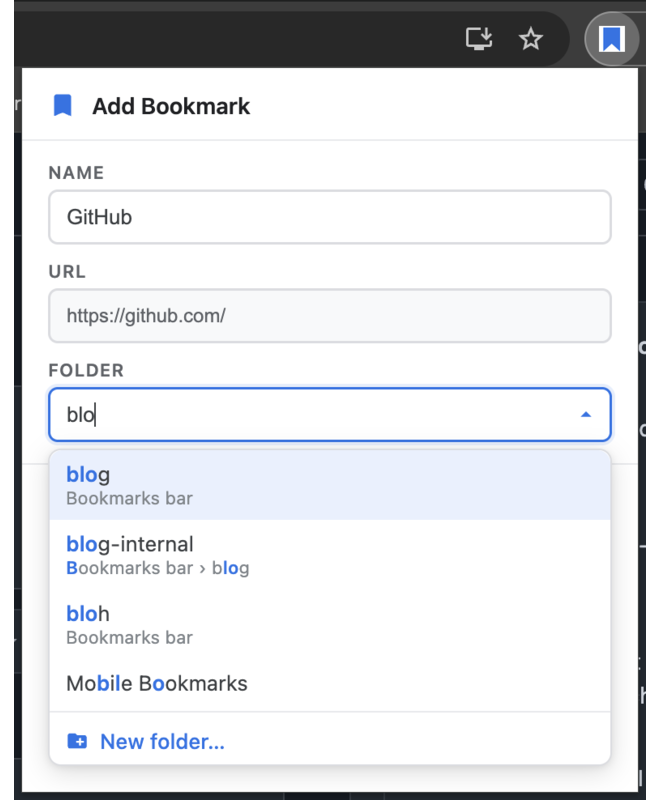
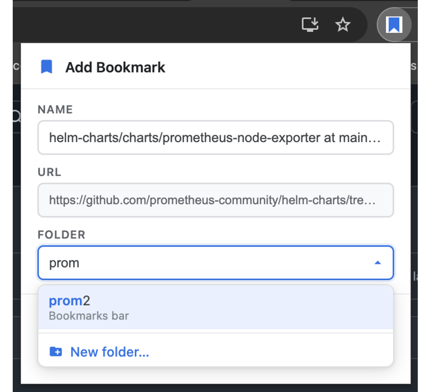
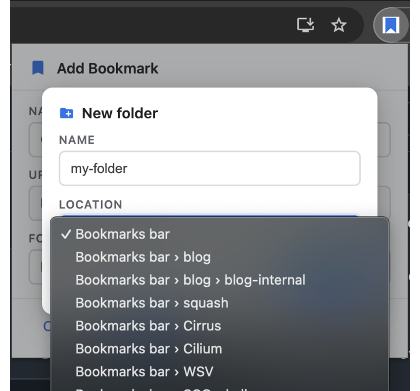

Chrome's bookmark dialog makes you scroll a flat list of every folder you own. This one lets you type. Fuzzy search matches folder names and full paths, anywhere in the tree.
MIT licensed · Manifest V3 · no tracking, no network requests, no account

Fuzzy matching means the letters you type only have to appear in order — not consecutively, and not from the start. Three characters are usually enough to isolate one folder out of hundreds.
Everything happens in one small dialog, without leaving the keyboard.
Filters on the folder name and on its full breadcrumb path, so dev/front and dvfr both land on the same folder. Matched characters are highlighted.
The dialog reads the page title and pre-selects the folder that matches it best. For pages you file repeatedly, the right folder is already there when the popup opens.
The folder you last bookmarked into is ranked to the top of the list, which makes a run of saves into the same folder a single keystroke each.
Open with your own shortcut, arrow through results, Enter to save, Esc to back out. The folder field takes focus on open, so you can start typing immediately.
If nothing matches, create the folder from the same dialog — pick its parent from the full tree and it becomes the target for the bookmark you are saving.
Two permissions, both required to do the job: bookmarks to read and write the tree, tabs to read the current page's title and URL. No host permissions, no analytics, no network calls.
The whole extension is one dialog. Here it is doing the three things it does.


The letters you type have to appear in the folder name in order, but they do
not have to be adjacent or start the word. Typing wpr matches
Work Projects, Weekly
Prep and WordPress. The
same matching runs against the folder's full path, so you can type a parent
folder's name to narrow down its children.
Not literally — Chrome reserves Ctrl+D at the browser
level and no extension can override it. Advanced Bookmarks suggests
Alt+D, and you can rebind it to any free combination at
chrome://extensions/shortcuts.
No. There is no service worker, no analytics and no network code of any kind — you can verify that in the source, which is a few hundred lines of dependency-free vanilla JavaScript. See the privacy policy.
Yes. It is a plain Manifest V3 extension using only the bookmarks
and tabs APIs, so it installs and runs in Edge, Brave, Vivaldi,
Opera and other Chromium-based browsers that can reach the Chrome Web Store.
The dialog detects it, switches to edit mode, pre-selects the folder the bookmark currently lives in and shows a Remove button. Moving a bookmark to a different folder is the same fuzzy-search flow as creating one.